Tutorial 1: Applying Aerodynamic Pressure Loads in Abaqus
Overview
This tutorial covers how to take the aerodynamic load demand from your V-n diagram, translate it into a spatially varying pressure field using Shrenk's approximation, and apply it to your wing model in Abaqus using Expression Fields and Surface Tractions.
The workflow has three steps:
- V-n diagram — identify the critical design point and extract the two load inputs the pressure equations need
- Pressure distribution — use the course equations and MATLAB to build and verify the full chordwise-spanwise pressure field
- Abaqus — partition the surface, define Expression Fields, apply the traction, and verify the result
Part 1. From the V-n Diagram to Wing Load Inputs
1.1 What the V-n Diagram Gives You
The V-n diagram defines the load envelope the structure must be designed to survive. The horizontal axis is equivalent airspeed V and the vertical axis is the load factor n = L/W — the ratio of lift to aircraft weight at a given flight condition.
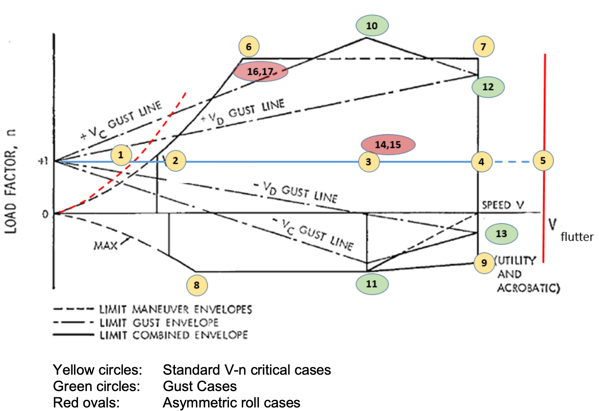
The key cases to identify on your diagram are:
- Case 6 — PHAA at \(V_{PHAA}\), \(n_p\): the corner where the positive stall boundary meets the positive limit load factor. This is the critical design point for upward bending — it produces the largest root bending moment.
- Case 7 — PLAA at \(V_D\), \(n_p\): same load factor as PHAA but at high speed and low angle of attack. Same \(n\) but a different pressure distribution shape.
- Cases 8–9 — NHAA/NLAA: negative load factor corners governing lower skin and spar cap tension. Not the focus here.
- Cases 10–13 — Gust envelope: load factors from vertical gusts at cruise and dive speed. If any gust case exceeds \(n_p\), that governs instead. For most low-altitude conditions this does not change the design point.
- Cases 14–17 — Asymmetric roll: not relevant for this symmetric loading analysis.
- Positive ultimate load factor \(n_{ult} = 1.5 \times n_p\) — the no-failure threshold, not always shown explicitly on the diagram.
For this tutorial, Case 6 (PHAA) is the design point — use \(V_{PHAA}\) and \(n_p\) from your diagram.
1.2 Computing \(L_{wing}^*\) and \(M_x^*\)
At the design point, total lift equals load factor times aircraft weight:
Each wing carries half in symmetric flight:
Example: Aircraft weight 800 lb, \(n_p\) = 3.8 \(\rightarrow\) \(L_{total}\) = 3040 lb, \(L_{wing}^*\) = 1520 lb per side.
The pitching moment for one wing side comes from the airfoil's quarter-chord pitching moment coefficient \(C_{m,ac}\), which can be looked up from XFOIL or an airfoil database at the design angle of attack:
where \(q = \frac{1}{2}\rho V_A^2\) is the dynamic pressure at the design point, \(l\) is the semi-span, and \(c\) is the chord. Make sure \(V_A\) is in ft/s and \(q\) is converted to lb/in² (divide by 144) to stay consistent with the inch-based geometry.
These two values — \(L_{wing}^*\) and \(M_x^*\) — are the only aerodynamic inputs to the pressure distribution. Everything else is geometry.
Part 2. Pressure Distribution and MATLAB
2.1 Spanwise Distribution — Shrenk's Approximation
Shrenk's approximation estimates the spanwise lift distribution as the average of the actual wing planform shape and an elliptic distribution with the same span and area. For a rectangular wing (\(\lambda = C_{tip}/C_{root} = 1\)), the general Shrenk formula (course reader, p. 2.67) reduces to:
This is a Taylor series expansion of the exact Shrenk form, truncated at the 4th-order term. It is straightforward to evaluate and integrate analytically, which is why this form is used in the MATLAB code rather than the exact expression with the square root term. The distribution peaks at the root (\(x = 0\)) and tapers toward the tip (\(x = l\)).
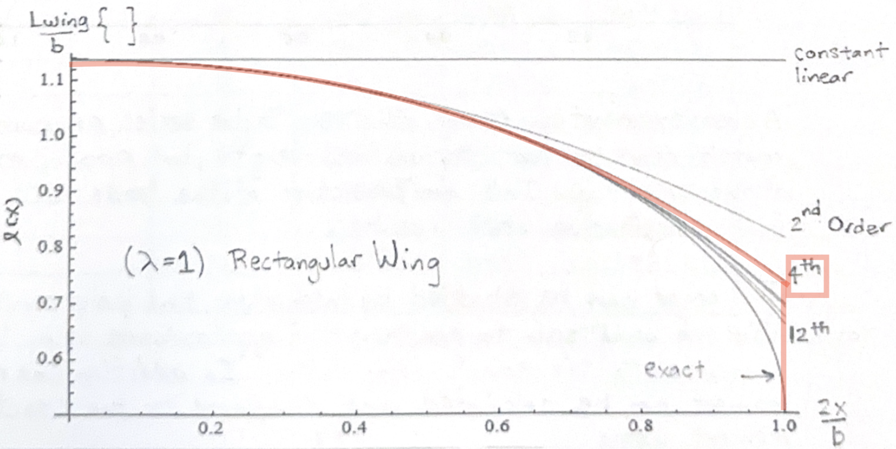
Figure: Spanwise load distribution \(P_z(x)\) from MATLAB. Root is at \(x = 0\), tip at \(x = l = 84\) in.
2.2 Chordwise Two-Region Model
The chordwise pressure is split at the quarter chord (\(\bar{y} = c/4\)) into two linear segments (course reader, p. 2.65–2.66). The physical reasoning is that pressure is high at the leading edge and zero at the trailing edge, with a change in gradient at the aerodynamic center.
Leading region (\(0 \leq \bar{y} \leq c/4\)):
Trailing region (\(c/4 \leq \bar{y} \leq c\)):
where \(m_x\) is the distributed pitching moment per unit span (lb·in/in). Both expressions evaluate to the same pressure at \(\bar{y} = c/4\), so the distribution is continuous across the boundary. The moment term shifts load toward the leading edge: when \(C_{m,ac}\) is negative (nose-down), the leading region pressure increases and the trailing region decreases.
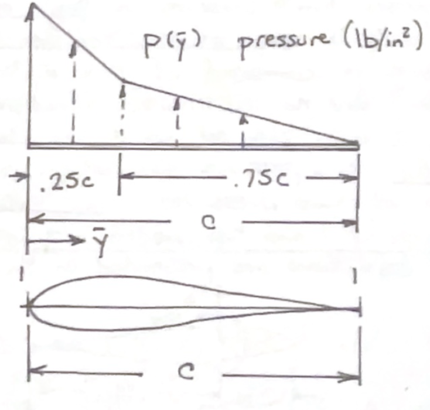
Figure: Chordwise pressure profile at a representative spanwise station. Steep gradient over the leading region (LE to c/4), gradual decay over the trailing region (c/4 to TE).
2.3 Full 2D Pressure Field and MATLAB Code
Combining sections 2.1 and 2.2 gives a pressure that varies in both spanwise (\(X\)) and chordwise (\(Y\)) directions. The MATLAB script builds this field and is organized to match the derivation directly:
- Parameters: \(L_{wing}^*\), \(l\), \(c\), \(M_x^*\)
- Spanwise \(P_z(x)\); anonymous function, plotted in Figure 1
- Chordwise grids for leading and trailing regions; \(P_{lead}\) and \(P_{trail}\) arrays
- Numerical integration via
trapzto verify total force - 3D visualization over the wing planform
- ExpressionField string export for Abaqus
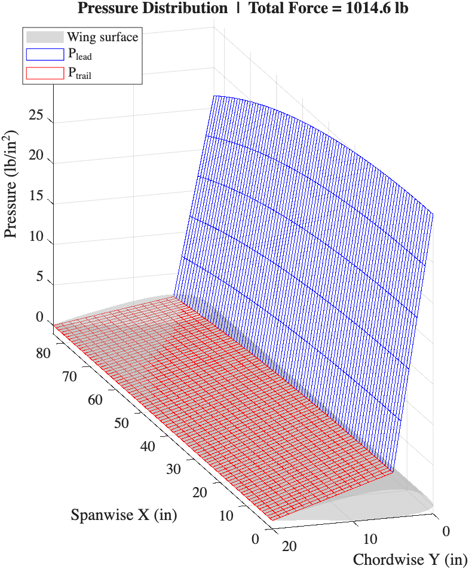
Figure: Full 2D pressure surface. Blue mesh: leading region. Red mesh: trailing region. Grey surface: wing profile for reference.
2.4 Comparing Load from Aerodynamic Distribution and Expected Lift
Integrating the pressure field over the planform area should recover \(L_{wing}^*\). The MATLAB script does this with trapz integrated first along the chordwise direction and then along span.
The printed output should match your input \(L_{wing}^*\) closely. Run this check before moving to Abaqus — if F_total is wrong, there is an error in the load input or equation, not in the FEA.
2.5 Generating the Abaqus Expression Strings
Abaqus ExpressionField requires the pressure to be written as a single mathematical string using X, Y, Z as spatial coordinates. It cannot call external functions, use if/else branching, or reference variables - so the equation is one shot. Primarily because Abaqus is picky, need to use pow() instead of ^ for example. Two strings are produced — one for the leading region and one for the trailing region.
── Abaqus ExpressionField strings ──
Leading edge:
(0.2000) * (11.9048 * (0.81831 - 0.31831*pow((X/84),2) - ...
Trailing edge:
(0.06667) * (11.9048 * (0.81831 - 0.31831*pow((X/84),2) - ...
Copy these strings directly into the Abaqus Analytical Field.
Note: The equations are developed knowing/thinking your airfoil was orientated with 0,0,0 at the root and leading edge, and that X defines the span length, Y defines the chord length, and Z is vertical. If not, you should adjust.
Part 3. Abaqus: Partition, Apply, Verify
3.1 Partitioning the Shell Surface
The two pressure equations apply to two distinct chordwise regions, so the shell surface must be split at \(y = c/4\) before loads can be applied. This is done with a datum plane partition in the Part or Assembly module.
Create a datum plane offset from the leading edge at a distance of \(c/4\) along the chordwise axis. Use Partition Face → Use Datum Plane to split the upper shell surface.
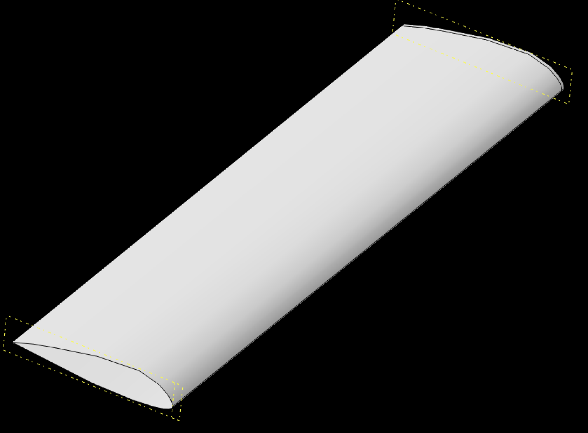
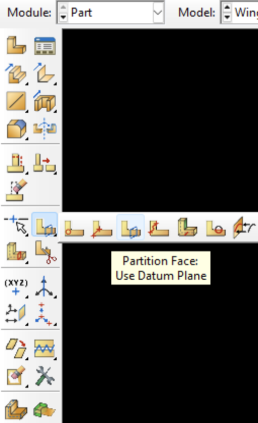 |
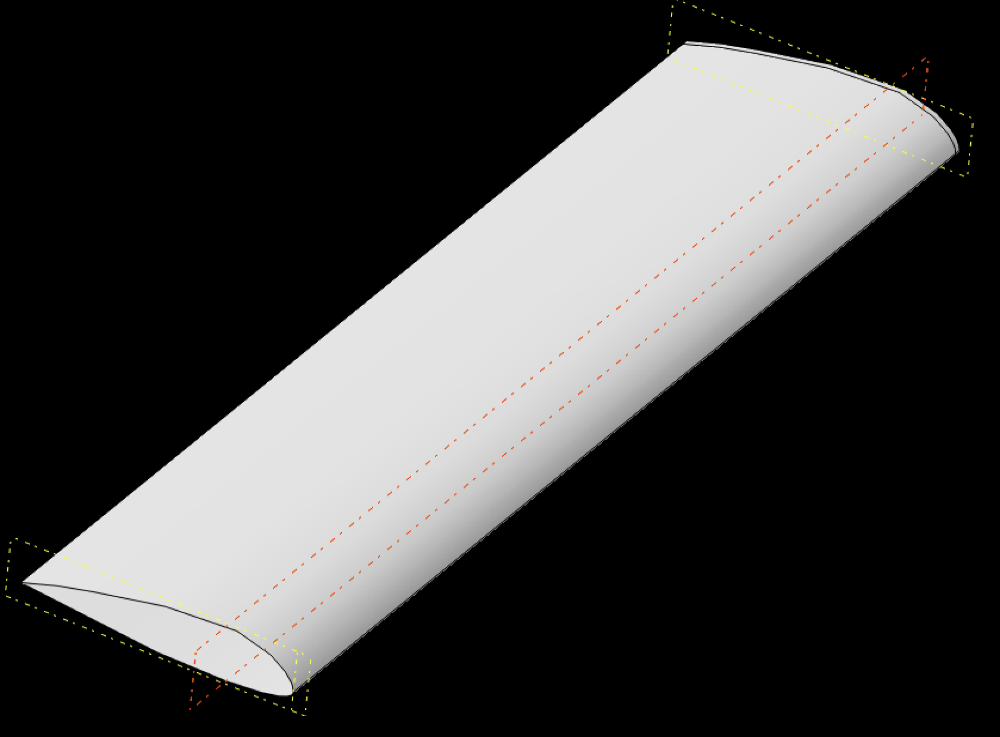 |
[Screenshot: Datum plane creation dialog, offset distance = c/4 along chordwise axis]
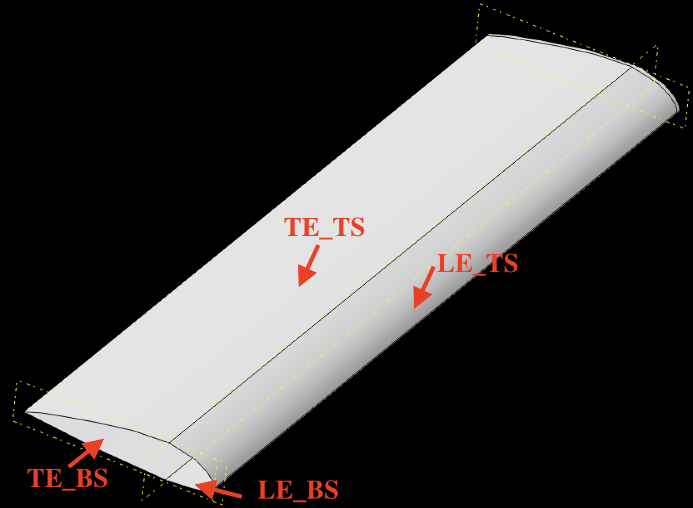
[Screenshot: Upper and lower shell surface partitioned into two regions, leading and trailing highlighted separately]
Create four surfaces from the result — one for the top skin and bottom skin, and one for each lead edge and trail edge region (LE_TS, TE_TS,LE_BS, TE_BS).
3.2 Creating ExpressionFields
In the Load module, navigate to:
Tools → Analytical Field → Create → Expression Field
Create one field for the leading region and one for the trailing region. Paste the corresponding string from MATLAB section 6 into the expression box.
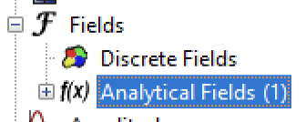 |
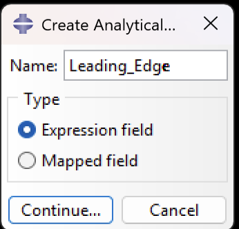 |
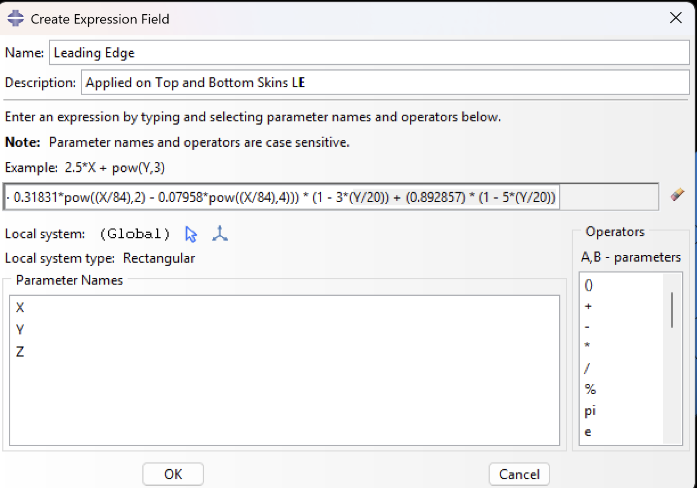
[Screenshot: ExpressionField dialog with the leading-region expression string pasted in]
Before confirming, check that the coordinate directions match the model: X should be spanwise (along the semi-span), Y chordwise (LE to TE). This must be consistent with how your part was oriented in Abaqus.
3.3 Applying the Surface Traction
With the ExpressionFields defined, apply a Surface Traction to each surface set:
Load → Create → Surface Traction
Set the traction type to General and the direction to the shell normal (outward from the upper surface). Reference the corresponding ExpressionField as the magnitude. Repeat for both surface sets.
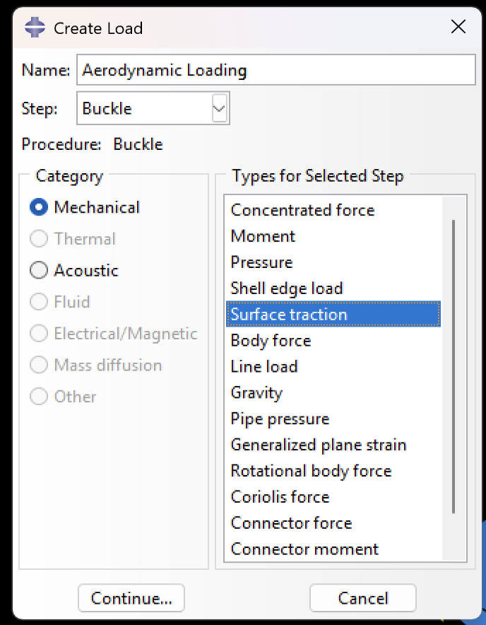 |
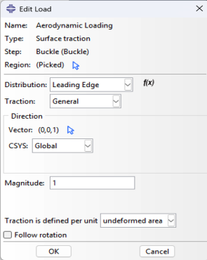 |
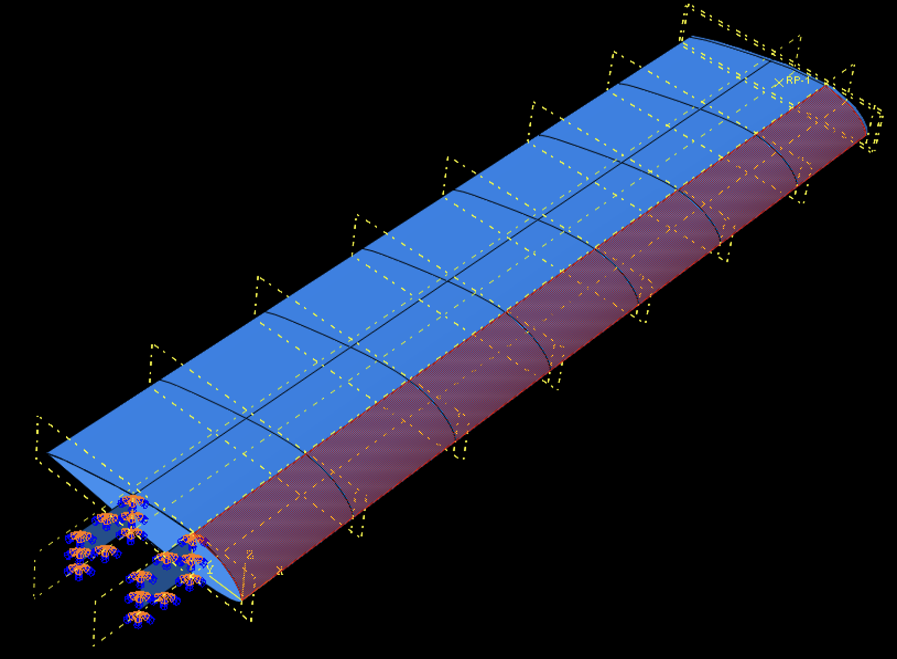 |
Note all of the options: Distribution is 'Leading Edge' equation we inputted, general traction!, where the direction is in the global Z direction. For Top skin, the magnitude should be 1/3 and for bottom skins, this should be 2/3, undeformed area and do not follow rotation.
Here it is applied to all 4 surfaces.
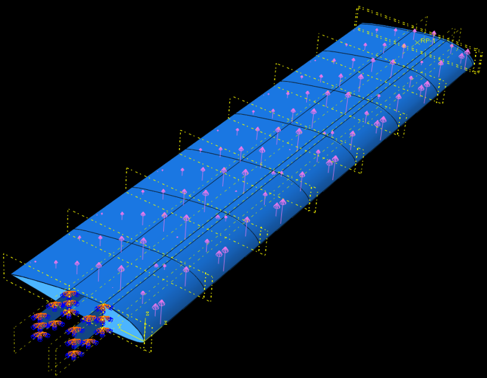
Note: The arrow magnitude don't represent well the same continuity before and after C/4. They are relative to the surface that they are on; not normalized across different surfaces, so even though on the Y=C/4 they have numerically the same value, the arrows are different.
3.4 Verifying the Applied Load
After running the job, query the reaction force in the Z-direction at the encastre root boundary condition under History Output or using the Free Body Cut tool. This should be within roughly 1–2% of F_total from MATLAB — the small difference comes from numerical integration over the mesh. My Lift_wing was 40000/2=2000lbf, and from a FBD I got 2088 lbf, 1" away from the root which is <5% error which is okay for initial analysis.
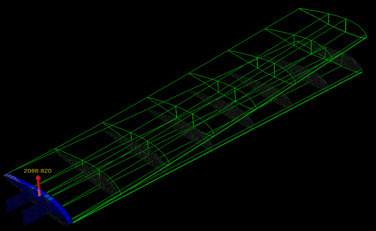
[Screenshot: Free body cut showing Z-reaction at root]If the reaction is in the wrong direction, the surface normal is likely pointing inward. Flip the traction sign in the load definition or recheck the surface set orientation.
Download MATLAB Script: ⬇️ aerodynamic_pressure.m